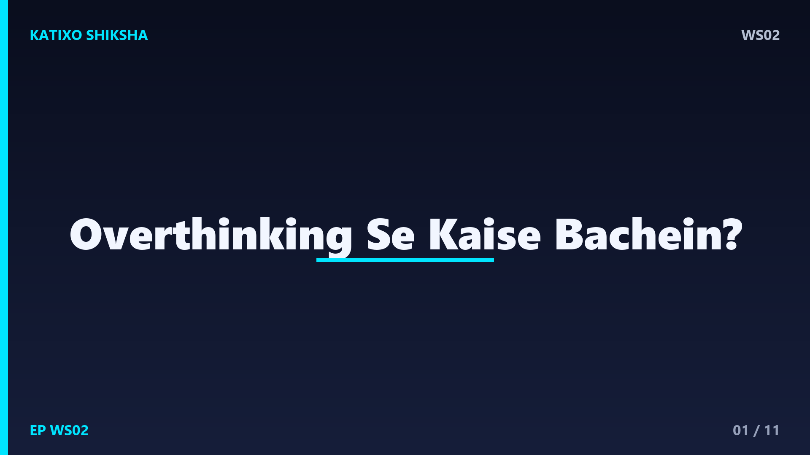
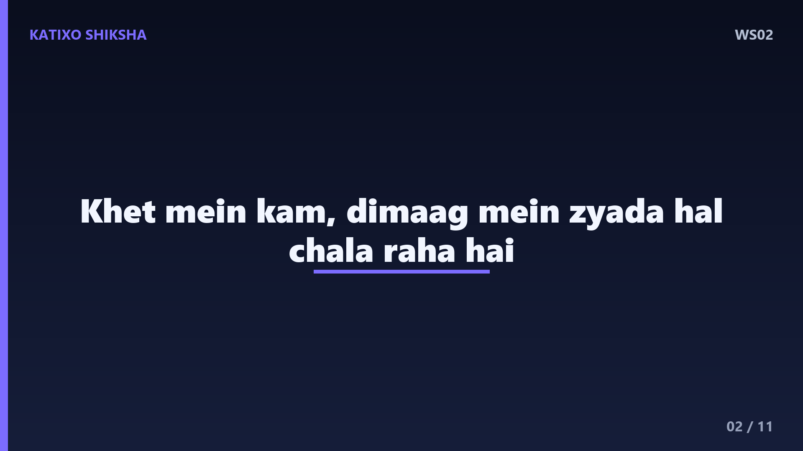
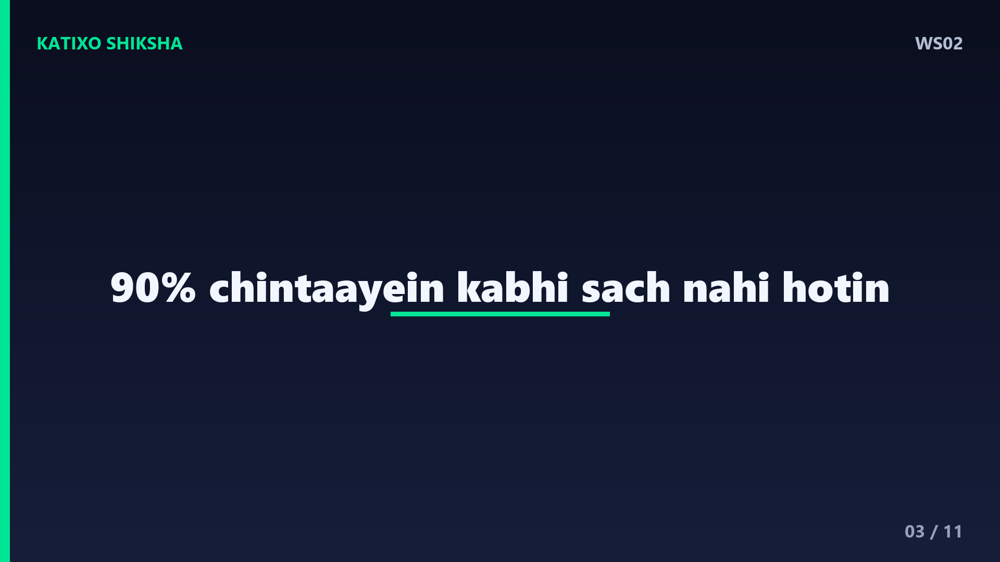
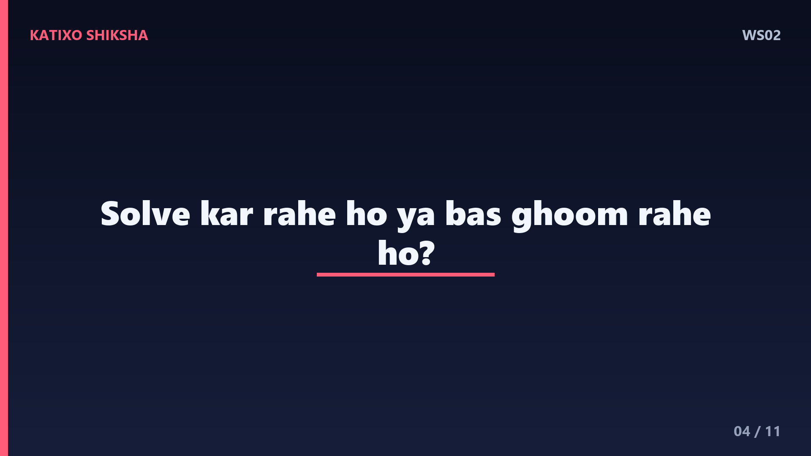
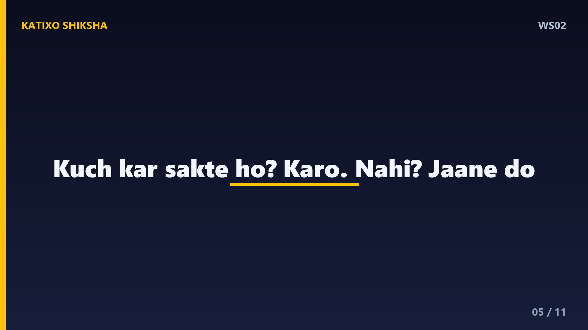
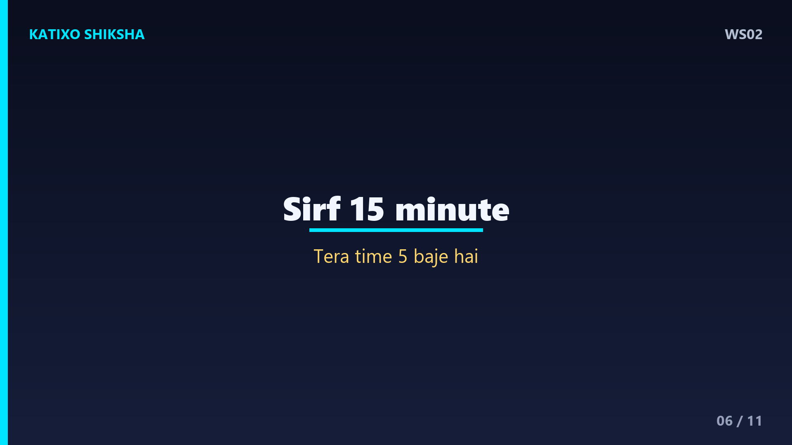
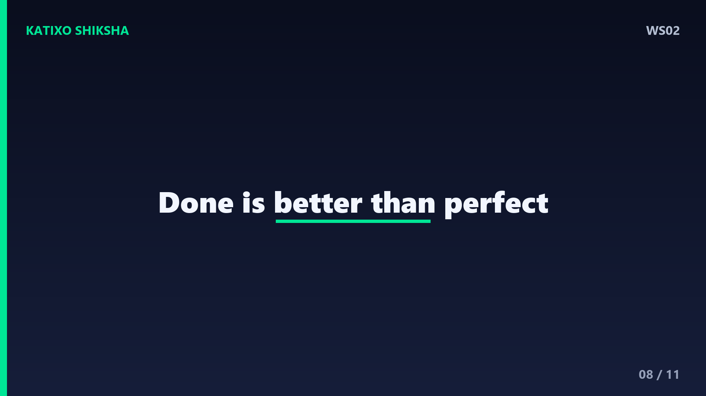
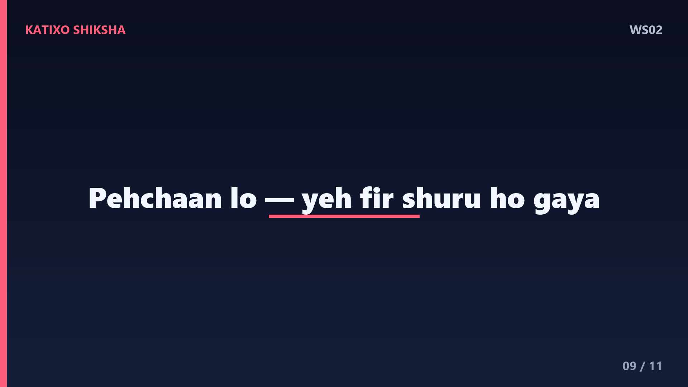
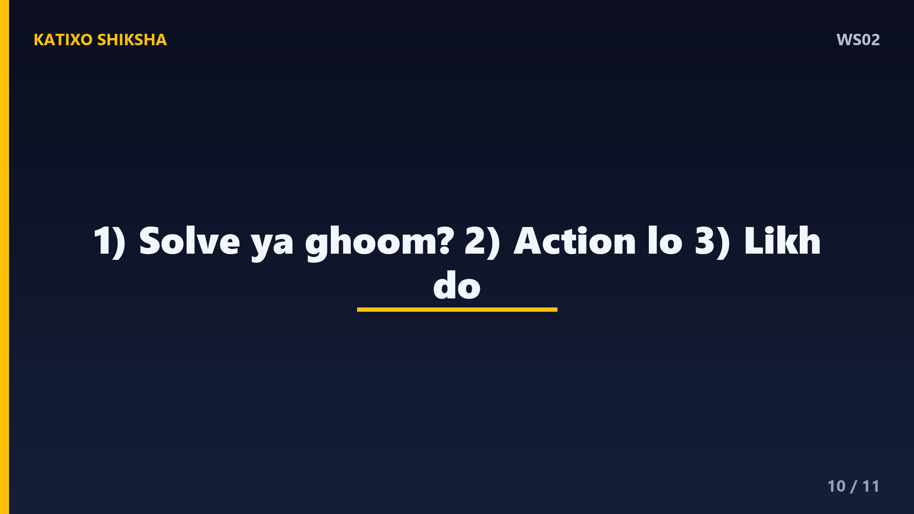

WS02 — Overthinking Se Kaise Bachein?

Slide 1दोस्तों, क्या तुम्हारे साथ भी ऐसा होता है — एक छोटी सी बात पर घंटों सोचते रहते हो? उसने ऐसा क्यों कहा, कल क्या होगा, अगर ये गलत हो गया तो? दिमाग एक hamster wheel बन जाता है — भागता रहता है, पर कहीं पहुँचता नहीं। ये है overthinking, और ये तुम्हारी energy चुपचाप चुरा लेता है। मैं हूँ Katixo KhojLab, और आज की कहानी तुम्हें इस जाल से निकलने का रास्ता दिखाएगी। चलो शुरू करते हैं।

Slide 2एक गाँव में एक किसान रहता था, बहुत मेहनती, पर बहुत परेशान। हर रात वो सोचता — बारिश हुई तो? नहीं हुई तो? फसल खराब हो गई तो? कीड़े लग गए तो? वो इतना सोचता कि सो ही नहीं पाता, और सुबह थका हुआ खेत जाता। एक दिन गाँव का एक बुज़ुर्ग उसके पास आया और बोला — बेटा, तू खेत में कम, अपने दिमाग में ज़्यादा हल चलाता है। किसान हैरान रह गया।

Slide 3बुज़ुर्ग ने पूछा — बता, पिछले साल तूने जितनी चिंताएँ कीं, उनमें से कितनी सच हुईं? किसान सोचने लगा और बोला — शायद एक या दो। बुज़ुर्ग मुस्कुराए — यानी तेरी नब्बे percent चिंताएँ बस तेरे दिमाग का drama थीं, जो कभी हुईं ही नहीं। तूने उन problems के लिए दुख झेला जो कभी आईं ही नहीं। Overthinking यही करता है दोस्तों — ये future की झूठी मुसीबतों के लिए तुम्हारा आज बर्बाद करता है।

Slide 4Lesson नंबर एक — सोचना और overthinking, दोनों अलग चीज़ें हैं। सोचना तब है जब तुम किसी problem का solution ढूँढते हो। Overthinking तब है जब तुम बिना solution के बस problem को घुमाते रहते हो, बार-बार, गोल-गोल। एक सीधा सवाल खुद से पूछो — क्या मैं अभी कोई solve कर रहा हूँ, या बस घूम रहा हूँ? अगर घूम रहे हो, तो रुक जाओ। वही पहला कदम है।

Slide 5बुज़ुर्ग ने एक practical तरीका बताया, जिसे आज science भी मानती है। उसने कहा — जब भी कोई चिंता आए, खुद से पूछ — क्या मैं इस बारे में अभी कुछ कर सकता हूँ? अगर हाँ — तो उठ और एक छोटा सा action ले। अगर नहीं — तो उसे जाने दे, क्योंकि सोचने से वो बदलेगी नहीं। Action चिंता का सबसे बड़ा दुश्मन है। जैसे ही तुम action लेते हो, दिमाग का loop टूट जाता है।

Slide 6Technique नंबर दो — इसे कहते हैं worry time. किसान को बुज़ुर्ग ने कहा — पूरे दिन चिंता मत कर। दिन में सिर्फ़ पंद्रह मिनट तय कर ले — मान ले शाम पाँच बजे। उस वक़्त बैठ और जी भर के चिंता कर। बाकी पूरा दिन, जब कोई worry आए, खुद से कह — रुक, तेरा time पाँच बजे है। ये सुनने में अजीब लगता है, पर इससे दिमाग को पता चलता है कि वो हर वक़्त नहीं, सिर्फ़ एक तय समय पर सोचेगा।
Slide 7Technique नंबर तीन — दिमाग को बाहर निकालो, कागज़ पर। जब thoughts सिर के अंदर घूमते हैं, वो दस गुना बड़े लगते हैं। एक diary लो और सब लिख डालो — जो डर है, जो tension है, सब। Science कहती है, लिखने से दिमाग का load हल्का होता है और problem छोटी दिखने लगती है। किसान ने ऐसा किया, और हैरान रह गया — जो पहाड़ लग रहा था, वो कागज़ पर सिर्फ़ तीन लाइनों की बात थी।

Slide 8एक और गहरी बात दोस्तों — perfectionism और overthinking साथ-साथ चलते हैं। हम सोचते हैं, जब तक सब perfect ना हो, शुरू नहीं करेंगे। और फिर सोचते ही रह जाते हैं, करते कुछ नहीं। याद रखना — done is better than perfect. एक अधूरा काम जो शुरू हो गया, उस perfect plan से बेहतर है जो सिर्फ़ तुम्हारे दिमाग में है। Action में हमेशा clarity छुपी होती है। चलना शुरू करो, रास्ता खुद दिखने लगेगा।

Slide 9किसान ने पूछा — बाबा, पर पुरानी आदत एक दिन में कैसे जाएगी? बुज़ुर्ग बोले — नहीं जाएगी, और जाने भी मत दे एकदम से। बस हर बार जब overthinking पकड़े, तुझे पहचानना है — अरे, ये फिर शुरू हो गया। बस ये पहचान ही आधी जीत है। Awareness के बिना तुम लड़ नहीं सकते। धीरे-धीरे, हर बार पहचानने से, ये आदत कमज़ोर होती जाएगी। Patience रख, खुद पर गुस्सा मत कर।

Slide 10चलो आज की तीन सबसे बड़ी सीख याद कर लें। पहली — खुद से पूछो, क्या मैं solve कर रहा हूँ या बस घूम रहा हूँ? दूसरी — अगर action ले सकते हो, लो; अगर नहीं, तो जाने दो। और तीसरी — चिंता को कागज़ पर लिख दो, वो छोटी हो जाएगी। ये तीन छोटी आदतें तुम्हारे दिमाग को एक शांत, साफ़ जगह बना सकती हैं, जहाँ शोर कम और सुकून ज़्यादा हो।
Slide 11याद रखना दोस्तों — तुम्हारी ज़िंदगी सिर्फ़ इसी पल में जी जा सकती है, ना बीते कल में, ना आने वाले कल में। Overthinking तुम्हें इस पल से चुरा लेता है। आज से एक छोटा वादा करो खुद से — हर सोच को action में बदलूँगा, या उसे जाने दूँगा। अगर ये कहानी काम की लगी, तो Like, share, aur Katixo KhojLab ko subscribe karna mat bhoolna. Milte hain agli kahani mein! तब तक — हल्के रहो, खुश रहो।